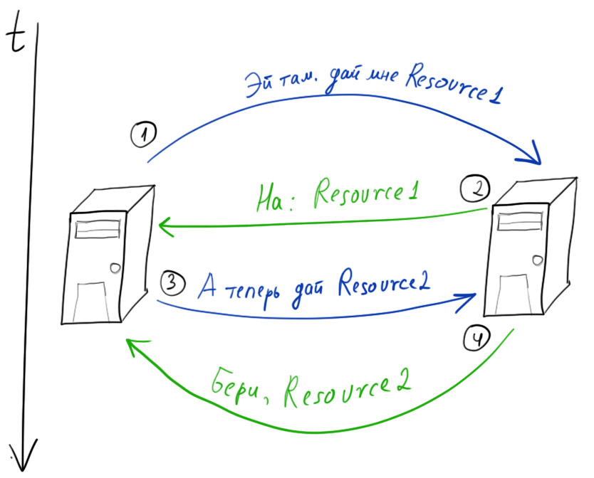
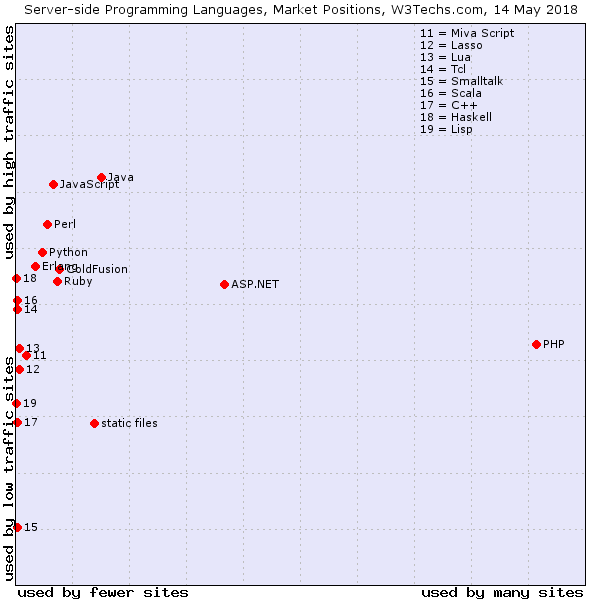
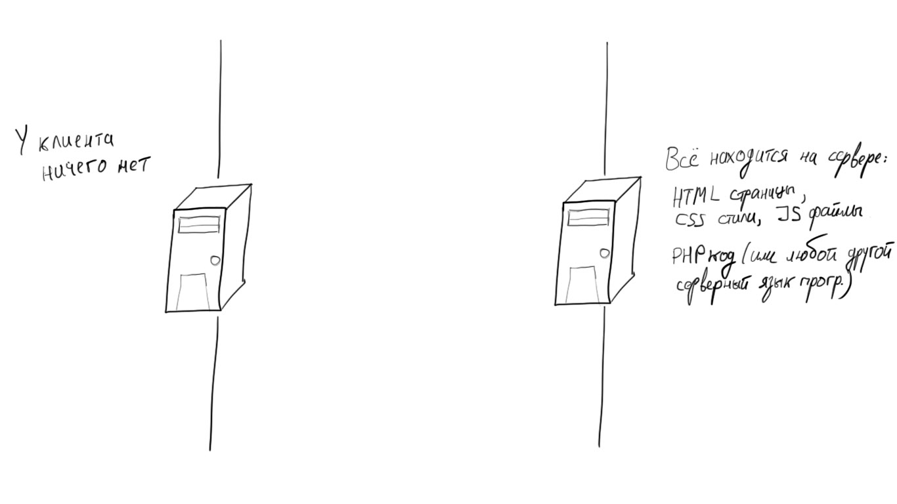

Веб программирование. Фронтенд
Пару слов обо всём
Содержание лекции
Веб программирование
Веб программирование - это программирование клиент-серверных систем, работающих по протоколу HTTP(S) (главным образом).
Весь веб построен на протоколе HTTP. Общение браузера с веб-серверами осуществляется именно по этому протоколу.
Что вообще понимают под вебом
Всемирная паутина (так никто не говорит), или веб - распределённая система, предоставляющая доступ к связанным между собой документам, расположенным на различных компьютерах, подключённых к сети Интернет.
Сайт - это узел в вебе, имеющий свой уникальный адрес, и объединяющий под собой определённый набор связанных ресурсов.
HTTP
HTTP (Hypertext Transfer Protocol) - stateless протокол прикладного уровня для взаимодействия клиент-серверных систем по принципу "запрос-ответ".
"Протокол" (коммуникационный протокол/протокол связи) - означает набор правил для передачи информации между двумя объектами.
Протокол описывает формат используемых сообщений и алгоритмы, по которым эти сообщения должны передаваться.
Если упростить, то можно сказать, что HTTP - это протокол общения разных программ между собой.
Клиент-серверная архитектура
HTTP - клиент-серверный протокол. Это значит, что при общении по HTTP всегда должно быть 2 стороны: Клиент и Сервер.
Сервер - это не физическая машина в каком-нибудь удалённом дата-центре. Сервер, как и клиент, - это программы, написанные специальным образом, чтобы работать по HTTP.
Как правило, программа-сервер запущена на другом компьютере, нежели клиентское приложение, и, для упрощения, сервером называют сам удалённый компьютер.
Сервер/клиент - это функциональность.
Веб серверы
За каждым ресурсом в вебе, к которому вы можете получить доступ, стоит веб-сервер.
Всемирную сеть образуют сотни миллионов запущенных веб-серверов по всему миру.
Принцип "запрос-ответ"
Протокол HTTP работает строго по принципу "запрос-ответ".
Одна сторона отправляет запрос (Request) на какой-то конкретный ресурс. И эта сторона тогда выступает в роли Клиента.
Другая сторона ожидает запрос, и при его получении отправляет ответ (Response), тому кто прислал запрос. Эта сторона называется Сервером.
URL
Ресурсы идентифицируются по URL (Uniform Resource Locator) - уникальному адресу веб ресурса.
Это то, что мы видим а адресной строке браузера.
URL не повторяются, и состоят из следующих элементов:

- http://localhost:4000/lecture/1_scripting/index.html#/2/3
- https://marketplace.visualstudio.com/items?itemName=npm
- https://www.internetworldstats.com/
Порты по умолчанию
HTTP по умолчанию работает через порт 80 (это значит, что сервер на своем компьютере подключен к 80 порту и слушает его, а клиент отправляет запросы на этот порт серверной машины).
HTTPS по умолчанию работает через порт 443.
Если в URL адресе опускается секция порта, это значит, что запрос будет идти на порт по умолчанию для используемого протокола.
Таблица стандартных портов:
Статья в википедииHTTPS
Протокол HTTPS - это тот же HTTP, только с шифрованием передаваемых данных по протоколу шифрования TLS (ранее SSL).
В настоящее время использование простого HTTP считается устаревшим и небезопасным.
Stateless
HTTP - stateless протокол. Statless - значит "без состояния".
Это означает, что любой HTTP запрос изолирован и независим от предыдущих запросов.
На один и тот же запрос всегда должен возвращаться один и тот же ответ. Запрос не содержит какого-либо меняющегося состояния системы.
Но в современном вебе любому динамическому персонализированному веб приложению требуется обрабатывать состояние системы и изменять его, поэтому было придумано много сложных и хитроумных решений для обхода этого ограничения.
Схема работы HTTP
История веба
Создателем веба является инженер из CERN Тим Бернерс-Ли. В 1989-1990 он разработал протокол HTTP, схему идентификатора URL, язык разметки HTML, и написал первый браузер и веб сервер.
Веб-страницы изначально были статическими форматированными текстовыми документами, просто находящимися в открытом доступе в сети.
Вот первый в мире веб-сайт:
http://info.cern.chТаким веб видели его создатели: просто текст с гиперссылками.
И именно под такой контент был заточен протокол HTTP и спроектирована вся инфраструктура всемирной паутины. Собственно от этого и все современные проблемы веба.
Продолжение истории
Веб сразу не был популярен, пока в 1993 году не появился браузер Mosaic с цветным графическим интерфейсом, и это стало поворотным моментом в его развитии.
После этого начался стремительный рост популярности веба, стали появляться тысячи первых сайтов.
И вон до чего всё дошло.
Браузеры
По своей сути, браузер является многофункциональным HTTP клиентом.
В настоящее время, веб-браузеры - одни из самых сложных программных систем в мире.
Например, исходный код Chromium составляет около 25 млн строк кода.
Архитектура браузеров
Все браузеры имеют схожую архитектуру и состоят из 3 программных компонентов:
- Графический интерфейс
- Браузерный движок
- Движок JavaScript
Браузерный движок отвечает за рендеринг и отображение веб-страниц (парсит HTML, CSS).
Движок JavaScript - это интерпретатор (т.е. компилятор), который выполняет JS код.
Виды браузеров

Гугл захватывает мир

Изолированность браузера
Браузеры спроектированы с очень серьёзным уклоном в направлении безопасности. Ведь они должны исполнять код, написанный непонятно кем и полученный из другого уголка веба. И кто знает, кто там что мог написать!
Каждая вкладка браузера запускается в изолированном окружении (sandbox) как отдельный процесс, т.е. нет никаких способов взаимодействия разных вкладок друг с другом, нет прямого доступа к ресурсам операционной системы (например, файловой системе).
Для вкладок даже есть ограничения на количество используемой оперативной памяти: на 32-битных системах это 512 Мб, а на 64-битных - 1.4 Гб (Chromium).
Разделение обязанностей
Изначально с вебом мог справиться и один программист, но в результате бурного развития и чудовищной скорости появления новых веб технологий, эта сфера разделилась на два больших направления:
- Frontend
- Backend
Frontend
Фронтенд разработка - это разработка клиентской браузерной стороны веб приложения.
Сюда относится вёрстка страниц с помощью HTML и CSS, и программирование на JS с использованием разнообразных библиотек.
Иначе говоря, фронтенд разработчики создают те ресурсы, которые будут отправляться пользователю, которые он будет видеть, которые будут выполняться у него в браузере.
Backend
Бэкенд разработка - это разработка серверной стороны веб приложения.
Задача бэкенда - разработка маршрутизации и бизнес-логики. В бэкенде, на стороне сервера, устанавливается, какие HTTP запросы будет обрабатывать сервер, и какие на эти запросы будут отправляться ответы.
Бэкенд - это описание логики обработки поступающих запросов и логики формирования отправляемых ответов.
Ещё о бэкенде
Разработка в бэкенде представляет собой написание всей бизнес-логики приложения, без каких-либо излишеств и графического интерфейса, чисто код.
Поскольку бэкенд разработка - это разработка обычных программ, выполняющихся в среде операционной системы, то использоваться, в принципе, могут любые технологии и языки программирования. Лишь бы была программная поддержка протокола HTTP.
К бэкенду относится работа с веб серверами, взаимодействие с БД, разработка API и многое другое.
Сервера
В бэкенде можно встретить 2 подхода к работе с веб серверами:
- Когда программисты самостоятельно программно реализуют логику работы веб сервера с использованием специальных библиотек.
- Когда используются готовые приложения веб серверов (Apache, Nginx, IIS), к которым дописывается логика обработки запросов.
Первый способ часто применяется при разработке небольших веб приложений или для создания API.
Второй способ хорошо заточен под веб-сайты и большие нагрузки.
Веб API
Веб - это не только разработка сайтов. Протокол HTTP не обязательно должен в ответ на запрос возвращать какой-либо документ (html, css, js), т.е. файл. Это только частный случай - то, с чем постоянно сталкивается обычный пользователь веба.
В ответ на запрос может возвращаться просто структурированная информация.
И тогда это называется Веб API.
Веб API обычно предназначается для программного использования, т.е. не для браузера и конечного пользователя, а для других программ, выступающих в роли клиента.
Например, веб API на получение информации о товарах Интернет-магазина может возвращать коллекцию (массив) из пар ключ-значение "ID товара", "название", "стоимость", "наличие".
Статистика бэкенда
Использование языков программирования на веб серверах.
Схема расположения ресурсов
Схема запросов

Типы веб сайтов
Веб сайты делятся на 2 категории:
Статические веб-сайты
Статический веб-сайт - сайт без бэкенда, сайт без какой-либо серверной логики. Весь контент в нём статический, неизменный.
Такой сайт состоит только из HTML, CSS, JS и дополнительных ресурсов. На стороне сервера не выполняется никакой дополнительной обработки. Сервер получил запрос на ресурс - сервер выдал файл этого ресурса.
В основном статические веб-сайты представляют собой информационные ресурсы или сайты-визитки.
Динамические веб-сайты
Ну, а динамические веб сайты - противоположная категория сайтов, - сайты, у которых есть бэкенд.
Главное предназначение бэкенда - обойти ограничение HTTP, его stateless натуру. Т.е. разграничивать пользователей и менять состояние ресурсов на основании предыдущих запросов и действий.
Большинство динамических веб-сайтов хранят на сервере какие-либо пользовательские данные и выполняют их обработку.
Типы приложений
В вебе можно натолкнуться на понятия:
- Веб сайты
- Веб приложения
- Веб сервисы
Но рамки этих категорий совсем размыты, и каждый их воспринимает по-своему, поэтому о чётком разделении здесь не идёт никакой речи.
Разграничения
Определение веб-сайта было в начале: набор ресурсов с уникальным адресом. Это самое общее понятие, им можно назвать всё.
Веб приложение - это подвид веб-сайта, обязательно динамического, когда серверная логика играет ключевую роль, и сайт имеет ярко выраженную функциональную направленность.
Веб сервис - тоже подвид веб-сайта, снова динамического, который в первую очередь нацелен на оказание каких-либо услуг клиентам/пользователям.
Обычно, сайты, которые можно назвать веб приложением, также можно назвать и веб сервисом.
Вообще, что хотите, то тем и считайте.
Проблема размеров
В современном мире больше 50% пользователей веба заходят на сайты с помощью мобильных устройств.
Поэтому любой веб-сайт должен одинаково хорошо отображаться как на маленьком мобильном экране, так и на широком дисплее.
Раньше просто создавали 2 разные версии сайта, под разные разрешения, но сейчас есть технологии, позволяющие делать сайты динамическими и изменчивыми, подстраивающимися под пользовательское разрешение экрана.
Responsive & Adoptive Design
Сайты, подстраивающиеся под размеры экрана, называются адаптивными (adoptive) или отзывчивыми (responsive).
Чтобы сделать сайт адаптивным или отзывчивым, при его вёрстке, в HTML и CSS нужно следовать специальным правилам (см. в сторону flexbox, CSS grid, media-query, %).
Модные тенденции
Mobile-first design
Одним из популярных направлений в разработке сайтов сейчас является mobile-first design.
Его особенность заключается в том, что изначально проектируется мобильная версия сайта, под экраны мобильных телефонов, и только затем определяется, как должна происходить адаптация интерфейса к широкому экрану компьютера.
Модные тенденции
Progressive Web App
Progressive Web App (PWA) - браузерные веб приложения, выходящие за пределы браузера. Такие веб приложения можно устанавливать на компьютер/телефон как обычное нативное приложение/программу. Они запускаются в отдельном окне, как классические программы для ОС, работают в оффлайне без Интернета.
Чтобы сделать из веб приложения PWA, нужно тоже просто разрабатывать его по определённой схеме и правилам.
Модные тенденции
Web Assembly
С 2017 года все основные браузеры начали поддерживать WebAssembly - технологию, которая позволяет запускать нативный код на любом языке программирования в браузере, вместо JS.
Для этого нужен лишь специальный компилятор для выбранного языка программирования, который будет производить компиляцию в wasm код. И этот wasm код будет выполняться в браузере так же, как обычный JS.